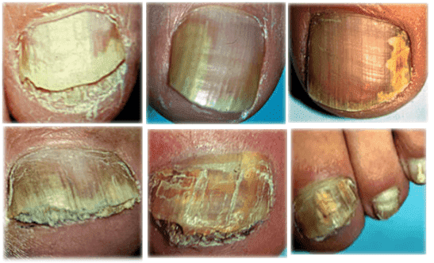
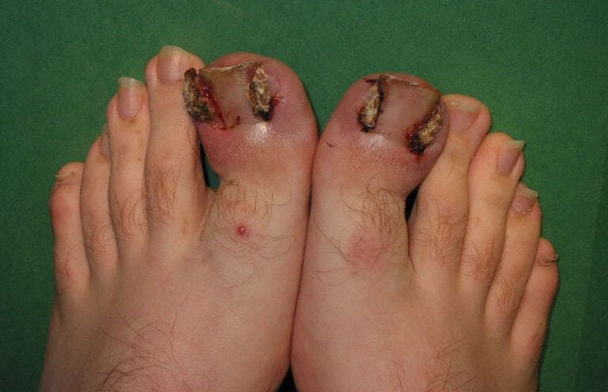
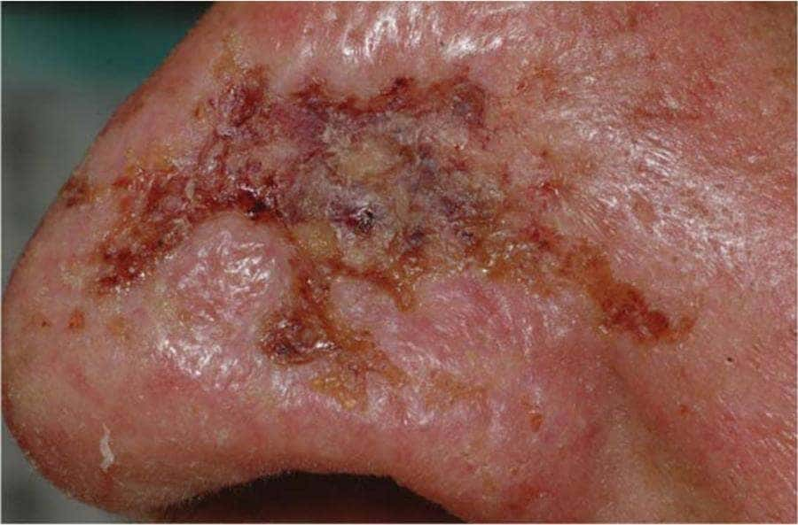
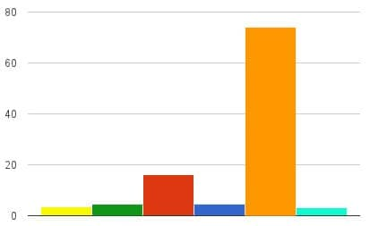
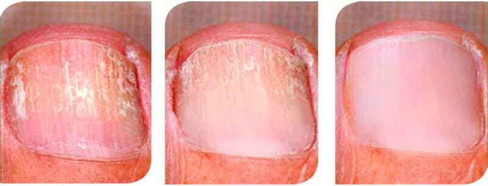
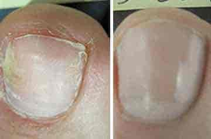

Chefärztin der Stadt. Republik Österreich "Nagelpilz
infiziert das Blut und leitet den Prozess der Nekrose ein. Es gibt für alles einen
Ausweg."
Marlene Diemberger: „Ich garantiere, dass jeder Mensch mit Nagelpilz in
Österreich ein Produkt zur Behandlung des Nagelpilzes und zur
Vorbeugung einer Sepsis mit 50 % Rabatt erhält.“
Aus der Pressekonferenz, wo Marlene Diemberger, Chefärztin aus
Österreich: „Nagelpilze dringen in Blut und innere Organe ein, verursachen Sepsis
und zerstören den Körper. Die Sterblichkeit durch Nagelpilz in Österreich
ist eine der höchsten weltweit. Kein einziger Infizierter lebt länger als
10-14 Jahre.“
Ein exklusives Interview für die Publikation mit Frau Marlene
Diemberger, Chefärztin von Österreich.
Warum Nagelpilz tödlich
ist und wie Sie Ihr Leben retten können, wenn Ihre Nägel gelb werden und Sie
Pilz haben?
Warum ist Nagelpilz Ihrer Meinung nach eine gefährliche Krankheit?
Wissen Sie, wie viele Menschen von Pilzen geheilt wurden? ? In unserem Land in 55.000 Menschen
starben, davon mehr als 31.000 an Nagelpilz oder mehr als die Hälfte. Nagelpilz
befällt nicht nur die betroffenen Nägel. Durch das Gewebe der Füße, das
Blut durchdringt und sich im ganzen Körper ausbreitet, zerstören Pilze den
Körper von innen und üben einen enormen Druck auf alle Organe aus. Seine Sporen
halten in den inneren Organen an und beginnen sich dort allmählich zu vermehren, was zu
Schäden führt. Es entwickelt sich eine Mykose der inneren Organe. Dies bedeutet,
dass jede infizierte Person im Wesentlichen von innen heraus verrottet. Es kann jederzeit zu
einem Herzstillstand, einem geplatzten Hirngefäß, Leberkrebs oder Nierenversagen
kommen. Jeder mit Nagelpilz ist gefährdet. Jede Abnahme der Immunität aufgrund von
Erkältung, übermäßiger Arbeit oder nervösem Stress kann zum
plötzlichen Tod führen.
Deshalb halte ich den Nagelpilz für eine äußerst gefährliche Krankheit,
die derzeit unter allen Krankheiten in Österreich mit an der Spitze der Sterblichkeit
steht. Jeder kennt Krebs und Onkologie, aber seien wir ehrlich, Krebs tritt bei 3-4% der
Menschen auf und Nagelpilz im Alter von 40-45 Jahren tritt fast jede Sekunde auf.
Warum können Ärzte mit dieser Krankheit nicht umgehen? Alles, was Sie tun
müssen, ist Menschen zu retten.
Zunächst einmal gehen Menschen mit Nagelpilz oft einfach nicht zum Arzt, da es sich um
keine sehr gefährliche Krankheit handelt. Und wenn sie gehen, dann nur, wenn sie totale
Angst haben, zum Beispiel wenn irgendwelche äußeren Probleme mit dem Fuß oder
den Zehen beginnen. Sie werden etwas verschreiben, sie werden sich besser fühlen und
dann werden sie nicht auftauchen, bis sie vollständig verletzt sind. Um den Pilz zu
entfernen, ist jedoch eine dauerhafte Behandlung erforderlich. Darüber hinaus verstehen
nur wenige Menschen die Folgen einer Hefeinfektion und was sie mit den inneren Organen
anrichten kann. Ich kann über Hunderte von Fällen sprechen, aber ich werde mich
auf diejenigen konzentrieren, die die Gefahr einer Hefeinfektion am deutlichsten zeigen.
Eine der bekanntesten äußeren Erscheinungsformen von Pilzen ist der
Nagelpilz:

Das Bild ansehen
Der Pilz, der Gewebenekrose und drohende Amputation verursachte:

Das Bild ansehen
Ein Pilz, der Weichgewebe verschlingt:

Das Bild ansehen
Lungen, von Pilzen von innen aufgefressen:
Das Bild ansehen
Es ist gut, die Situation von außen in gewisser Weise
zu verbessern, aber das wird Sie nicht vor einem
tödlichen Ausgang bewahren. Sie können jederzeit
sterben.
Zweitens gibt es jetzt einen enormen Personalmangel in den
Polikliniken. Was soll man tun, wenn es nur einen Mykologen
in der Nähe gibt und der Mangel an Dermatologen mehr
als 37 % beträgt? Und von den Anwesenden kommen mehr
als die Hälfte mit gekauften Diplomen. Es ist
gefährlich, Menschen Zugang zu gewähren, manchmal
verschreiben sie eine solche Behandlung, dass es für
den Patienten besser wäre, zu Hause zu bleiben und
nicht in die Klinik zu gehen. Ich kann es nicht ablehnen,
solche Spezialisten einzustellen: Ärzte werden nicht
katastrophal, sie haben alle einen Abschluss, einige sogar
einen hervorragenden. Sie haben die Universität mit
Auszeichnung abgeschlossen und töten tagelang
Patienten. Ärztinnen und Ärzte der älteren
Generation sterben an Altersschwäche, doch der
Arztberuf ist schwierig. An ihre Stelle treten solche
„Idioten“, die nicht wissen, was sie dem Patienten je nach
Fall verschreiben sollen. Ich würde gerne alle feuern
und qualifiziertes Personal einstellen, aber wo finde ich
sie jetzt?
Es scheint, dass der Mangel an qualifizierten Ärzten
der Grund dafür ist, dass wir in unserem Land eine
so hohe Todesrate durch Nagelpilz haben?
Nicht nur aus diesem Grund. Es geht um einen akuten Mangel
an wirksamen Medikamenten. Apotheken verkaufen alles
außer Produkten, die wirklich helfen können.
Veraltete Medikamente, die nicht mehr helfen oder neue
Fälschungen, die überall gelobt werden, sind zwar
teuer, aber nutzlos. Außerdem können neue
Ärzte alles verschreiben. Oft gibt es Medikamente, die
vorübergehend helfen können, aber gleichzeitig die
Leber oder den Magen so stark angreifen, dass die Folgen
äußerst beängstigend sein können. Und
noch etwas, die meisten Medikamente zielen nicht auf die
eigentliche Behandlung des Pilzes ab, sie helfen nur, die
äußeren Erscheinungsformen des Pilzes zu
beseitigen, aber sie verbleiben im Körper und
töten ihn langsam ab.
Im Komplex erhalten wir dieses Ergebnis: Menschen werden
nicht behandelt und sterben an einer Sepsis und einer
Infektion innerer Organe, die durch einen einfachen
Nagelpilz verursacht werden. Natürlich gibt es private
medizinische Zentren, aber dort arbeiten die gleichen
Ärzte wie in normalen Kliniken. Und die meisten von
ihnen sind Hochschulabsolventen, die nichts davon verstehen,
Menschen wirklich zu behandeln. Ihre einzige Aufgabe in
einem privaten medizinischen Zentrum besteht darin, das
Maximum an Geld aus einer Person herauszuholen. Sie haben
nicht die Aufgabe, wirklich zu helfen und zu behandeln.
Was ist in diesem Fall für Menschen mit Nagelpilz zu
tun? Warten einfach auf den Tod? Sie sind die
Chefärztin, wenn Sie von diesem Problem wissen,
warum lösen Sie es nicht!
Natürlich bin ich nicht arbeitslos, aber das Problem
mit dem medizinischen Personal ist nicht so einfach zu
lösen. Alles hier hängt nicht von mir ab, sondern
von der Tätigkeit medizinischer Universitäten. Ich
kann nicht damit umgehen, neue Ärzte auszubilden. Daher
sollten wir keine schnelle Lösung für dieses
Problem erwarten. Hinzu kommt, dass diese Situation nicht
nur hier, auch in anderen Bundesländern nicht besser
ist. Das ist fast überall die Situation.
Aber es gibt auch einen freudigen Moment in diesem Kampf um
Menschenleben. Es ist mir gelungen, unser Land als
Versuchsstandort für die Freigabe eines neuen
Medikaments zu gewinnen, das Nagelpilz vollständig
heilen und aus dem Körper entfernen kann.
Warum glauben Sie, dass diese Vorbereitung die Situation
irgendwie ändern wird?
Es heilt Nagelpilz vollständig, beseitigt
äußere Erscheinungsformen und reinigt den
Körper vollständig von seinen Spuren. Ab den
ersten Tagen nach der Einnahme des Medikaments wird die
Gefahr für das Leben einer infizierten Person auf
nahezu Null reduziert. Eine Person beginnt einfach mit der
Einnahme dieses Medikaments und befindet sich bereits
außerhalb der Risikozone. Das Präparat reinigt das
Blut und die inneren Organe von Pilzen, die sich im ganzen
Körper ausbreiten, und stoppt die Prozesse, die durch
Pilze verursacht werden, die uns lautlos von innen
töten.
Meiner Meinung nach wird dieses Präparat Zehntausende
von Menschenleben retten. Deshalb habe ich mein Bestes
gegeben und mit Beamten gekämpft, um darauf zu
bestehen, dass unser Land als Pilot gewählt wird.
Was ist das für ein Präparat? Was ist das
Geheimnis seiner Wirksamkeit?
Dieses Mittel ist derzeit absolut führend in der
Behandlung von Pilzkrankheiten, es ist das Präparat der
neuen Generation "". Im Gegensatz zu
vielen anderen Arzneimitteln wurde es nicht von einem
kommerziellen Pharmaunternehmen, sondern von staatlichen
wissenschaftlichen Strukturen entwickelt. An der Herstellung
des Präparats war eine abteilungsübergreifende
Gruppe der besten Ärzte und Forscher Europas beteiligt.
Es ist zehnmal effektiver als alle bekannten traditionellen
medizinischen und kosmetischen Behandlungen. Gleichzeitig
hat es keine Nebenwirkungen, verursacht keine Sucht und
schafft eine Immunität gegen Pilzerreger, wodurch
Fälle von wiederholten Erkrankungen ausgeschlossen
werden können.
Das Geheimnis seiner Wirksamkeit liegt in seiner
kombinierten und effektiven Wirkung auf den menschlichen
Körper. Der einzige Grund, warum Nagelpilz
überlebt, ist die Schwierigkeit, ihn vollständig
auszurotten. Meistens verbleibt es irgendwo am Fuß oder
an inneren Organen und kehrt nach der Nagelbehandlung immer
wieder zurück. In diesem Fall ist das körpereigene
Immunsystem überfordert. Es kann höchstens die
Entwicklung einer Pilzinfektion stoppen, und jede Abnahme
der Immunität führt zu schnellem Wachstum von
Pilzen, Entwicklung von Mykosen und Tod.
"" erzeugt im Körper spezielle
Antikörper, die auf Pilze einwirken und diese im ganzen
Körper zerstören. Dadurch wird der menschliche
Körper vollständig von Pilzen gereinigt,
außerdem stimuliert er in Zukunft die Produktion von
Antikörpern. Die Verwendung des Präparats
ermöglicht eine zehnfache Erhöhung der
Widerstandskraft des Körpers gegen Pilze. Sie werden
sie wahrscheinlich nicht mehr kontaktieren. Mit einer
einzigen Behandlung reinigt "" den
Körper vollständig von Pilzinfektionen und beugt
Komplikationen vor.
Warum ist „“ wirksamer als andere bekannte
Antimykotika aus der Apotheke?
Es ist bekannt, dass Pilzinfektionen lebende Organismen sind
und sich wie jeder lebende Organismus an Umweltbedingungen
anpassen. Die überwiegende Mehrheit der Antimykotika
wurde vor 20 bis 30 Jahren entwickelt, und während
dieser Zeit haben Pilzinfektionen ihre eigene Immunität
gegen die meisten Antimykotika entwickelt.
"Exoderm" ist ein völlig neues Medikament, es
wurde unter Berücksichtigung der Untersuchung der
Pathogenese von mehr als 6.000 verschiedenen
Pilzstämmen entwickelt und zerstört dank einer
neuen einzigartigen Formel den Pilz sowohl
äußerlich - auf den Nägeln als auch auf den
Haut. und in den Körper und reinigt den Körper
davon.
Die Wirksamkeit des Präparats wurde in Studien
nachgewiesen, die von unserem Zentrum unter Beteiligung
von Freiwilligen unter Verwendung verschiedener
Volksheilmittel zur Behandlung von Pilzen
durchgeführt wurden. Die Ergebnisse
bestätigten die hohe Wirksamkeit von
"":
Antimykotika
Wirkstärke %
%

Mometasonfuroat
Lamisil
Blockierung
Diprogenta
Meeräsche
"" neutralisiert die Infektion
vollständig und baut gleichzeitig Pilzpartikel im Blut
und in den inneren Organen ab. Dies ermöglicht es
Ihnen, die Infektion im Körper zu stoppen und gibt ihm
eine Chance, gesund zu werden. Alle Infektionsherde im
Körper werden beseitigt. Als Ergebnis wird die Person
vollständig von der Pilzinfektion befreit und kehrt in
einen gesunden Zustand zurück. Darüber hinaus
entwickelt eine Person nach der Behandlung mit diesem
Präparat eine Immunität gegen Pilze, d. h. es
besteht kein Risiko einer erneuten Infektion.
Das Präparat hat eine starke Wirkung auf den
Körper:
1. Desinfiziert und zerstört die Struktur der
Pilzinfektion;
2. Entfernt Juckreiz, Schuppung und Reizungen der
Haut der Füße nach den ersten Anwendungen;
3. Stellt schnell die Nagelstruktur wieder her und
heilt Wunden und Risse an den Füßen;
4. Beseitigt unangenehme Gerüche und
normalisiert die Arbeit der Schweißdrüsen;
5. Verhindert die Vermehrung und das Wachstum
pathogener Mikroflora;
6. Normalisiert das Immunsystem, fördert die
Heilung chronischer Pilzerkrankungen;
7. Es reinigt das Blut und die Lymphe von den
Fäulnis- und Zersetzungsprodukten der Pilze;
8. Entwickelt Immunität gegen die meisten
bekannten Stämme von Pilzpathogenen;
9. Es hat eine innovative Zusammensetzung, die
eine erneute Infektion mit Pilzen ausschließt;
10. Beseitigt vollständig alle Mykosesymptome
bei Anwendung des empfohlenen Behandlungsschemas.
Wirkung des -Präparats

Start 3
3 Wochen 6 6 Wochen
"" ist als Creme erhältlich. Die
Creme beseitigt das Wiederauftreten einer Pilzinfektion und
den Übergang der Infektion zu gesunder Haut.
Gibt es Kontraindikationen? Und warum wurde das Produkt
mit 50 % Rabatt herausgebracht?
Es gibt keine Kontraindikationen. Die Zusammensetzung von
"" ist so gewählt, dass es keine
allergischen Reaktionen hervorruft. Das Präparat kann
auch bei Allergien gegen andere Arzneimittel angewendet
werden. Es ist völlig unbedenklich für die Leber,
die normalerweise stark leidet, wenn Medikamente eingenommen
werden.
Was die zweite Frage betrifft, so wurde das Präparat,
wie gesagt, von staatlichen Strukturen geschaffen, und der
Eigentümer der Rezeptur des Präparats ist der
Staat. Derzeit läuft die Produktion über die
Fähigkeit des Verbandes, Pilzinfektionen zu
bekämpfen, und beginnt sich auszubreiten. Wenn der
Eigentümer von „“ natürlich ein
Pharmaunternehmen wäre, würde es es für viel
Geld verkaufen, aber in diesem Fall ist der Eigentümer
der Staat, dieses Programm zielt darauf ab, Bürger zu
ermutigen, die sich um ihre Gesundheit sorgen dass, wenn Sie
eine Behandlung bestellen, "" mit 50%
Rabatt ausgegeben wird. Die Produktionskosten wurden
teilweise aus dem Budget bezahlt, so dass wir eine begrenzte
Menge an Präparaten für die Freigabe an die
Bevölkerung mit einem Rabatt von 50% erhalten konnten.
Wie können Menschen erhalten?
Sie müssen lediglich in Österreich wohnen.
„“ wird direkt ab Lager versendet und per Kurier
geliefert. Es wird per Nachnahme bezahlt. Der Transport im
ganzen Land und die Lieferung von einer bestimmten Adresse
zusammen mit langen Warteschlangen und Erwartungen hielt ich
für eine unproduktive Idee. Patienten leiden jeden Tag
an Mykose, und wir werden sie dazu bringen, Schlange zu
stehen und gestresst zu sein? Es ist sehr einfach, das
Präparat zu bekommen - geben Sie eine Bestellung mit
Ihrem Namen und Ihrer Telefonnummer auf, warten Sie auf den
Anruf eines Spezialisten, der die richtige Behandlung
für Sie auswählt, geben Sie die Lieferadresse an
und warten Sie dann einfach auf den Kurier.
Sie müssen eine Bestellung auf der offiziellen
Website aufgeben. Wie gesagt, geben Sie einfach Ihren Namen
und Ihre Telefonnummer ein. Ich persönlich garantiere,
dass alle, die Bestellungen aufgegeben haben, ihr Paket
sicher erhalten werden.
Hinzugefügt am . Die Lagerbestände von
gehen zur Neige, da wir das Programm auf
den (einschließlich) beschränken
müssen.
Auf Wunsch von Frau Marlene
Diemberger setzen wir einen Link zu der Seite, auf der
Sie eine Bewerbung für Exoderm hinterlassen
können:
33 Kommentare
heute
Lana Haas
Ich hatte Pilz auf meinen Nägeln. und
sie verschwanden ... es ist ein Monat her!
Vielen Dank für dieses Produkt!
vor einer Stunde
Romy Wallner
Unglaublich! Ich habe ""
erhalten, ich habe gerade angefangen, es zu
verwenden, es wirkt bereits auf der Haut um
die Nägel herum!
vor einer Stunde
Céline Binder
Ich bin sehr dankbar für die
Informationen zu diesem Produkt. So etwas
suche ich schon lange. Ich freue mich auf
das Produkt! Vielen Dank!
vor einer Stunde
Anton Hofer
Frau Diemberger, vielen Dank! Ich habe es
versucht, es ist einfacher für mich.
Mal sehen, was in einer Woche passiert. Es
ist zu früh, um das zu sagen, ich komme
später wieder. Aber von außen
verändern sich die Nägel schon zum
Besseren. Nun, ich denke, es wird gut!
vor einer Stunde
Marlene Diemberger
Anton, machen Sie sich keine Sorgen und
benutze "" weiter. Die
Hauptsache ist, die Gebrauchsanweisung des
Präparats zu befolgen.
Mit
freundlichen Grüßen Marlene
vor einer Stunde
Manuel Breuer
Hilfe! Ich habe die Pilze satt, ich kann sie
mit nichts heilen. Beschwerden und Schmerzen
lassen mich nicht allein. Ich weiß
nicht, was ich tun soll. Ich nehme
regelmäßig verschiedene
Medikamente, aber sie helfen nicht :(
vor einer Stunde
Raffael Aigner
Manuel, nehmen Sie "", Sie
werden es nicht bereuen, zumal es 50%
günstiger ist. Ich hatte Probleme mit
Pilzen, das Gewebe meiner Füße
wurde beschädigt, nichts half mir, ich
übergab mir die Hände. Danke an
meine Mutter, die ""
gefunden und mich dazu gebracht hat, es zu
verwenden. Übrigens, ich habe es vor
zwei Monaten gekauft, ohne Rabattprogramm.
Es ist noch etwas mehr als eine Woche bis
zum 8-Wochen-Kurs, die restlichen
betroffenen Nägel werden mit der Schere
geschnitten, am Daumen ist noch etwas
übrig, die sind weg! Die restliche
Woche muss von dort verschwinden. Bisher
habe ich viele Produkte verwendet, nichts
hat mir geholfen.
vor einer Stunde
Elena Mosel
Wie bekomme ich ""?
vor einer Stunde
Hannes Reinhardt
Elena, hier ist der Link
zu "", ich rate Ihnen
nur, sich zu beeilen, solange das
Rabattprogramm noch aktiv ist.
vor einer Stunde
Elena Mosel
Hannes, ja, danke, ich habe es schon
bestellt, ich habe eine Bestellung
aufgeben Können Sie mir sagen, wie
lange die Lieferung dauert?
vor einer Stunde
Hannes Reinhardt
Elena, die Lieferung dauert eine Woche :)
vor einer Stunde
Klara Faymann
Es ist ein erstaunliches Produkt, ich rate
jedem, ich habe den Pilz so satt, ich kann
nicht an den Strand gehen, ich kann keine
offenen Schuhe tragen. Aber nach sechs
Wochen der Anwendung von „“
besserte sich der Zustand und jetzt gibt es
keine Spur des Pilzes mehr.
vor einer Stunde
Lukas Menger
Klara, ist das Ergebnis wirklich so
wirkungsvoll? Ich sollte es wohl selbst
bestellen.
vor einer Stunde
Felix Bauer
Dies ist ein sehr gutes Produkt, ich habe es
mit meiner Frau verwendet, nachdem diese
Infektion unser Haus befallen hatte. Die
Familientherapie verlief gut, die Pilze
verschwanden in unserem Haus und tauchten
nicht wieder auf. Jetzt fingen wir ohne
Scham an, ins Stadtbad und Spa zu gehen.
vor einer Stunde
Theo Strauss
Ich sehe, dass ich nicht der einzige mit
solchen Problemen bin, aber Gott sei Dank
bin ich vor einem Monat auf
"" gestoßen, es hat
mich vor Pilzen gerettet, so schnell, wie es
nicht viele Medikamente tun konnten.
vor einer Stunde
Maria Kubin
Sagen Sie mir, ob das Produkt mir wirklich
helfen wird? Weil ich keine Wirkung von
Medikamenten und Ärzten habe
vor einer Stunde
Marlene Gruber
Maria, ja, natürlich. Die Wirkung ist
sehr stark und vor allem völlig
natürlich. Also beeilen Sie sich und
bestellen Sie sogar mit 50% Rabatt! Meine
Schwiegermutter ist Fußpilz mit
"" komplett losgeworden.
vor einer Stunde
Alina Winkler
Danke, "" hat mir sehr
schnell geholfen! Ich habe es direkt beim
Hersteller bestellt! Verzögern Sie die
Behandlung nicht, es ist besser, diese
Pilzprobleme jetzt loszuwerden, als
später ins Bett zu fallen und
festzustellen, dass Sie sich wegen einer
Kleinigkeit nicht bewegen können.
vor einer Stunde
Katja Brandauer
Danke, Frau Diemberger. Ohne Sie würde
ich nicht an die Wirksamkeit des Produkts
glauben! Meine Nägel brachen und
schmerzten ständig, ich versuchte, sie
mit speziellem Nagellack zu behandeln, ich
nahm Pillen. Der Lack half nur
vorübergehend. Jetzt benutze ich
"", das Ergebnis ist
ausgezeichnet. Ich benutze es bereits seit 3
Wochen, aber ich habe mich entschieden, den
6-wöchigen Kurs zu beenden!
Und das Paket kam sehr schnell an.
vor einer Stunde
Marlene Diemberger
Katja, das freut mich sehr. Sagen Sie mir
bitte besser, mit welchen Mitteln haben Sie
versucht, den Pilz vor ""
zu behandeln?
Mit freundlichen
Grüßen Marlene
vor einer Stunde
Katja Brandauer
Frau Diemberger, Lamisil, Bloctimo und noch
einen Lack. Nichts hat mir geholfen...
vor einer Stunde
Marlene Diemberger
Katja, ich verstehe, danke.
Mit
freundlichen Grüßen Marlene
vor einer Stunde
Luise Mesmer
Das Ergebnis hat meine Erwartungen einfach
übertroffen. Der ganze Zehenpilz
verschwand in 5 Wochen! Ich habe auch
mehrere Pakete für meinen Freund
bestellt.
vor 57 Minuten
Mario Steiner
Ich habe den Pilz von der Armee mitgebracht.
Ich habe verschiedene Behandlungsmethoden
ausprobiert – ohne Erfolg. Ich habe von
einem bekannten Arzt von „“
erfahren. Ich habe es im Rahmen eines
Rabattprogramms gekauft. Ich habe zweimal
täglich gemäß den Anweisungen
geschmiert, ich habe meine Nägel
geschnitten. Die Behandlung dauerte etwa 8
Wochen. Ich habe hier bestellt, sie
haben mich sehr schnell angerufen und die
Bestellung wurde bestätigt. Jetzt kann
ich bei heißem Wetter Sandalen tragen
und schäme mich nicht, ins Schwimmbad
zu gehen. :)
vor 55 Minuten
Lia Mayer
Mein Mann leidet seit 3 Jahren an Mykose, es
ist ein Wahnsinn, seine Nägel sind gelb
und ich kann den Geruch nicht beschreiben.
Zuerst benutzte er Tropfen, dann benutzte er
einen Lack, ich kann mich nicht an den Namen
erinnern, mein Mann wurde wütend und
brach die Behandlung ab, weil ihm nichts
half. Auf Anraten meines Freundes probierte
er „“ aus und die Ergebnisse wurden
in nur 3 Wochen sichtbar. Schade, dass wir
es nicht mit 50% Rabatt bekommen haben.
vor 53 Minuten
Greta Belek
In der Privatapotheke
unseres Freundes wird das Paket
"" für fast 100 EUR
verkauft, die Behandlung übersteigt den
Betrag von 400 EUR, also habe ich mich nicht
entschieden, es zu kaufen, ich hatte nicht so
viel Geld. Aber hier habe ich gesehen, dass es
sich um ein spezielles Programm handelt, und ich
habe es sofort bestellt. Der Pilz geht
jeden Tag zurück und es sieht aus wie eine
gewöhnliche Creme.
vor 48 Minuten
Marlene Diemberger
Also, Greta, versuchen die Apotheken das auch
zu verkaufen? Es ist eine Schande, dass die
Leute so viel Geld ausgeben. Nun folgen wir:
wohin und an wen wir die Ware versenden.
Mehrere Jahrzehnte lang habe ich vergeblich
versucht, vernachlässigte Pilze zu
heilen. Ich beschloss, ""
zu versuchen, von dem der Arzt sprach, alles
verschwand in 5 Wochen. Und ich frage mich,
warum ich nicht früher von diesem
Produkt erfahren habe?
vor 39 Minuten
Marlene Diemberger
Nino, leider kann man hier nichts machen. Es
hat viel Zeit und viel Geld gekostet, ein so
wirksames Präparat zu entwickeln. Aber
nach so langer Zeit kann man das Pilzproblem
schnell wieder loswerden.
Mit
freundlichen Grüßen Marlene
vor 36 Minuten
Lena Schmidt
Ich habe den Artikel gelesen und sofort
beschlossen, es zu versuchen.
Gewöhnliche Medikamente halfen mir
für kurze Zeit, mir wurde gesagt, dass
Pilze schwer zu behandeln sind. Jetzt zeige
ich euch die Ergebnisse.
"" wurde so schnell
geliefert. Vielen Dank, ich kann jetzt
wirklich ein normales Leben führen!

vor 31 Minuten
Anika Wagner
Leute, sagt mir, wo ihr bestellt habt? Dieses
Produkt wird nicht in Apotheken verkauft,
aber ich habe Angst, es online zu bestellen.
Ich möchte nicht auf eine
Fälschung stoßen, weil ich
verstehe, dass es nicht nützlich sein
wird.
vor 27 Minuten
Marlene Diemberger
Ich wiederhole noch einmal, dass
"" NUR über das
Bestellformular bestellt werden kann,
um keinen Fehler zu machen, klicken
Sie auf den obigen Link! Besonders im
Rabattprogramm gibt es die Möglichkeit,
Produkte mit 50 % Rabatt zu kaufen, aber das
wird nicht lange dauern, also beeilen Sie
sich mit Ihrer Bestellung! Und bitte
Vorsicht vor Fälschungen.


Ich hatte Pilz auf meinen Nägeln. und sie verschwanden ... es ist ein Monat her! Vielen Dank für dieses Produkt!